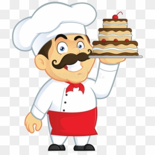

NUESTRO CONCURSO
Nuestra Filosofía
El concurso Master Chef es conocido por su riguroso proceso de selección, en el que los chefs se eligen en función de su experiencia, habilidades y conocimientos en las artes culinarias. Los concursantes se enfrentan a una serie de intensos desafíos que ponen a prueba sus habilidades para crear platos únicos y deliciosos bajo presión.
El concurso Master Chef no sólo celebra el arte de cocinar, sino que también inspira a los aspirantes a chefs a esforzarse y perfeccionar sus habilidades. Es una plataforma que no sólo muestra los talentos de estos chefs sino que también reúne al mundo culinario en una celebración de la comida y la creatividad. Cada año que pasa, el concurso Master Chef continúa elevando el listón y estableciendo nuevos estándares de excelencia en el mundo culinario.
El propósito del concurso Master Chef se extiende más allá de la competencia en sí: es una iniciativa de marketing estratégica que eleva el perfil de los chefs participantes, atrae la atención sobre nuestra marca y genera expectación dentro de la comunidad culinaria. Al mostrar los talentos excepcionales de estos chefs, no solo celebramos sus habilidades únicas y sus enfoques innovadores de la cocina, sino que también nos posicionamos como defensores de la excelencia culinaria y partidarios de las artes culinarias.
Desde aperitivos meticulosamente elaborados hasta platos principales exquisitamente servidos, y desde deliciosos postres hasta bebidas perfectamente combinadas, el concurso es un testimonio de la diversidad y la creatividad que definen el panorama culinario. Cada plato presentado es un reflejo del arte y la dedicación del chef, ya que equilibran hábilmente sabores, texturas y atractivo visual para crear una experiencia gastronómica inolvidable.
Master Chef Wario, ganador del concurso en su versión 2023.
El tono del concurso Master Chef es de profesionalismo y respeto inquebrantable por el oficio culinario. Mantenemos los más altos estándares de experiencia culinaria y defendemos la integridad de la competencia para garantizar una plataforma justa y equitativa para todos los participantes. Nuestro compromiso con la excelencia es inquebrantable y nos enorgullecemos de fomentar un entorno que fomenta la innovación, la colaboración y la búsqueda del dominio culinario.
Además del título, el ganador del concurso Master Chef también recibe un premio en efectivo y la oportunidad de trabajar junto a algunos de los mejores chefs del mundo. Pero para la mayoría de los concursantes, el verdadero premio es el reconocimiento y la exposición que reciben por su talento y trabajo duro.
Los ingredientes para este consurso son:
- Justicia
- Creatividad
- Originalidad
- Transparencia
- Imparcialidad
- Profesionalismo
- Innovación